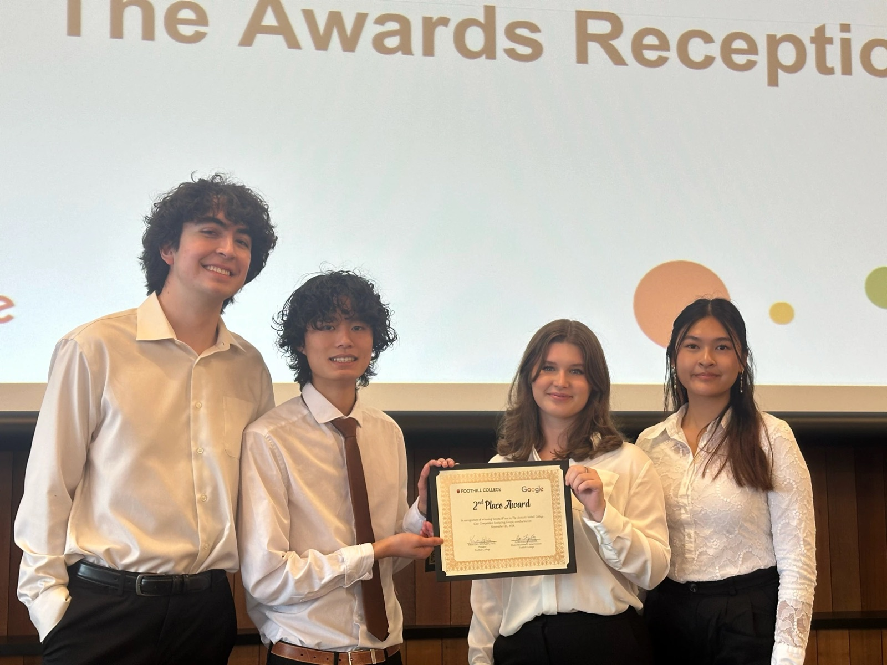
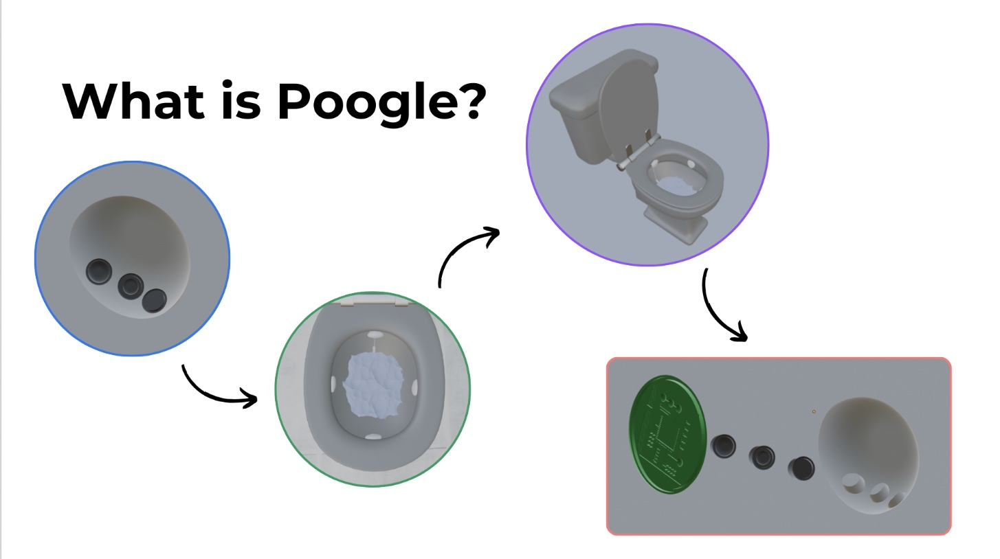

Poogle
A smart device that attaches to any toilet and turns a daily routine into an early warning for digestive disease.

Gut health is checked too rarely
Digestive problems become common with age: slower digestion, medication side effects and weaker digestive muscles all add up. Yet most checks happen only when something already feels wrong, and the tests are invasive, inconvenient or both. Older adults have no easy way to watch for problems day to day.
A health check that asks nothing of you
Poogle attaches to a standard toilet. Sensors (near-infrared spectrometers, optical sensors, a camera and a pH meter) analyze each bowel movement, and AI models look for early signs of infection, inflammation and diseases like colorectal cancer or Crohn’s. A companion app turns the readings into simple health reports and lifestyle recommendations, and flags trends worth raising with a doctor.

Designed for people who avoid complex tech
One-time installation, then nothing to remember, charge or wear. For an older audience, the best health tracker is one they never have to operate.
Daily and preventive, not occasional and reactive
Continuous readings catch trends between doctor visits and prompt a visit when it actually matters, so users need fewer routine invasive tests.
Why not the at-home kits that already exist?
| At-home test kits | Poogle |
|---|---|
| You collect a sample and mail it in | Hands-free, nothing to ship |
| One kit per test, so you need many | One device, readings every day |
| Kits expire and go to waste | Nothing expires; cheaper over time |
| A snapshot | A trend line your doctor can use |
Sizing a $30M first market
Global gastrointestinal device market (2022), growing about 3.3% a year as populations age.
The U.S. is 40% of the market ($15.04B). About 4% of Americans are over 65 with a chronic digestive condition.
A 5% share as a new entrant: about 28,000 units at $1,065.
Unit economics
- About $710 in prototype parts, most of it the $500 near-infrared spectrometer. At scale, manufacturing drops to about $30 a unit.
- $1,065 retail price, a 50% margin in line with other medical devices.
- Subscription for insights, modeled on Fitbit Premium: ongoing reports, tracking and personalized recommendations.
- B2B partners: senior care facilities for on-site monitoring, telehealth services, and insurers looking to prevent costly emergency procedures.
Three-year roadmap
Pilot in senior care and retirement communities; keep improving the prototype.
Plug into medical AI models, send data to doctors through hospital partners, and sell through smart-toilet manufacturers.
Become the main aggregator of gut health data and expand into new sectors.
What I’d push on now
Validate the user before the market. We sized the market from the top down. Today I’d start the way I did with First Step: interview older adults and caregivers about how they’d feel about a device in their bathroom.
Price for who actually pays. $1,065 is a lot for someone on a fixed income. Senior care facilities and insurers may be the real buyers, which would change the whole go-to-market.
Trust is the product. Health data from a bathroom is about as private as data gets. Clinical validation and a clear privacy story would matter as much as the sensors.